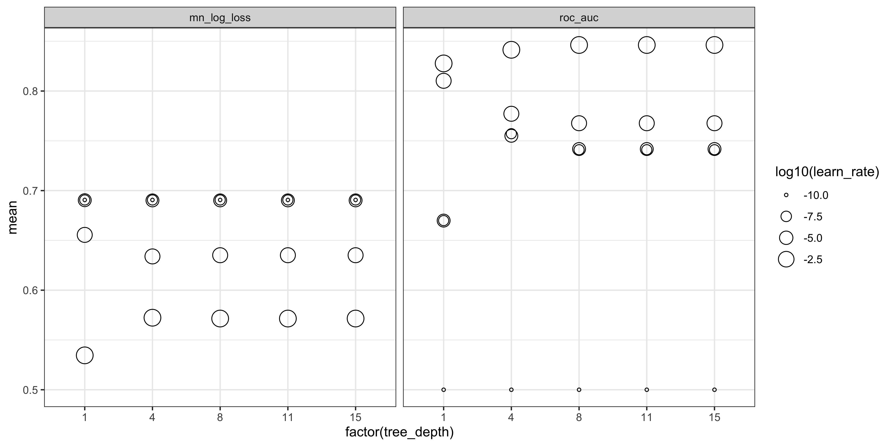
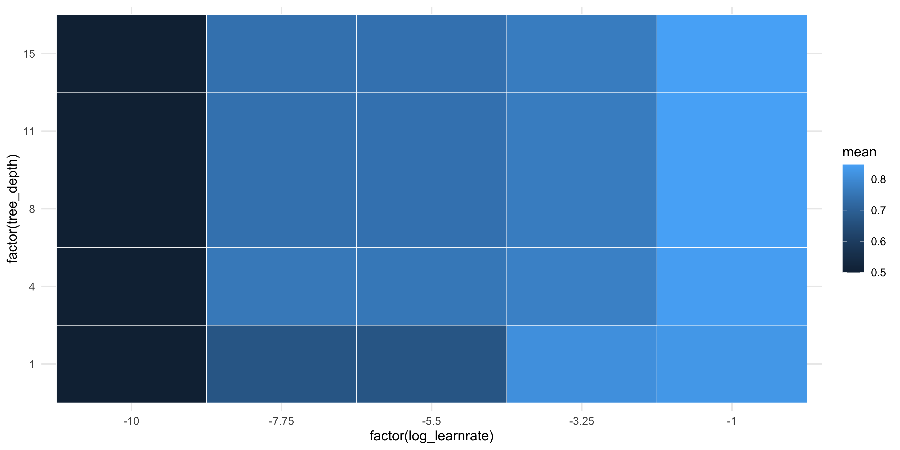
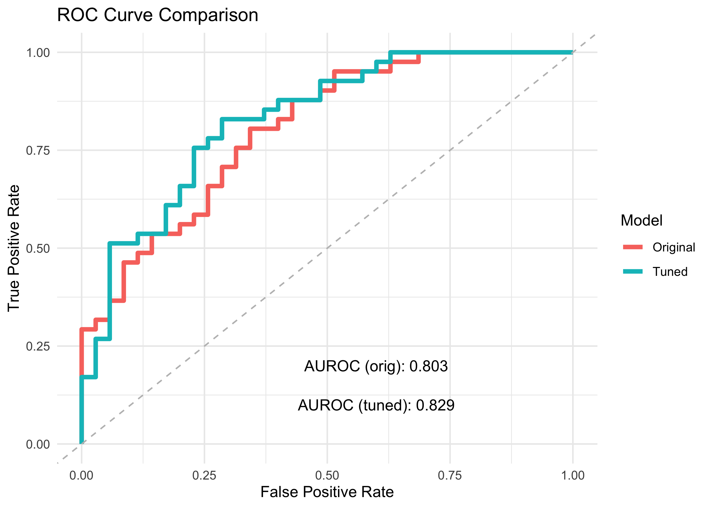
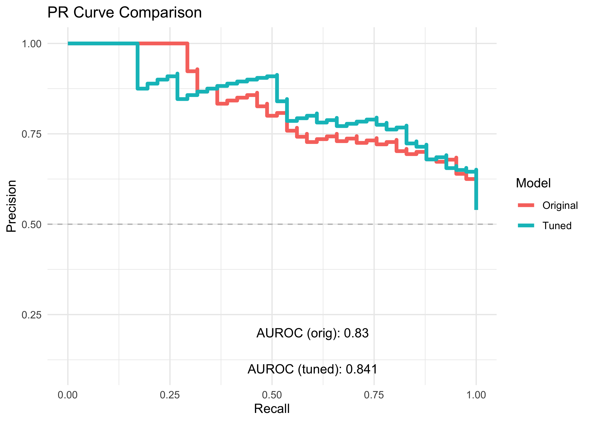

library(tidyverse)
library(readxl)
library(tidymodels)
library(xgboost)
theme_set(theme_minimal())Part 3
Background
Using a dataset containing imaging-derived histology features, and tumour status (benign vs malignant), so far we have run ML Part 1 to explore and transform the data, and ML Part 2 to build an XGBoost model with pre-defined hyper-parameters.
Aim
In this final section, we will use the same input data to create an XGBoost classifier, but instead of pre-defining the model hyper-parameters, we will perform a ‘grid search’ to identify the combination of hyper-parameter values that produce the most accurate classifier.
We will then compare the tuned model to that created using pre-defined hyper-parameters in ML Part 2.
Load libraries
Load data
First, we load the data created in ML Part 2
load('data_processed/ml_pt2_objects.Rda')Set seed
Reproducible ‘randomness’. This ensures everyone using this tutorial gets the same results.
set.seed(42)Cross training
Cross-fold validation requires the training data to be split into sub-sets of roughly equal size. The model is trained on N-1 sets and tested on the remaining ‘unseen’ data subset. Here we determine the folds for cross-validation during tuning, using vfold_cv().
folds <- vfold_cv(train_cl, v = 5, strata = status)
folds# 5-fold cross-validation using stratification
# A tibble: 5 × 2
splits id
<list> <chr>
1 <split [179/45]> Fold1
2 <split [179/45]> Fold2
3 <split [179/45]> Fold3
4 <split [179/45]> Fold4
5 <split [180/44]> Fold5Hyper-parameter tuning
Compared with the single model with defined hyper-parameters in ML Part 2, here we allow the tree_depth and learn_rate to be tuned, using a range of values across a ‘grid’.
In the previous section we set the exact parameters for the boost_tree() function. Here we allow the tree depth and the learning rate to be tuned for optimal performance, by running multiple models across a range of tree depth and learning rate parameters. Note that these arguments are now set to tune().
xgb_spec_tune_cl <- boost_tree(trees = 500,
tree_depth = tune(),
learn_rate = tune()) %>%
set_engine("xgboost") %>%
set_mode("classification")Tuning workflow
We construct a workflow where the xgboost model now includes the original recipe from ML Part 2, and the tuning steps defined above.
wf_xgb_tune <- workflow() %>%
# model outcome and features & pre-processing steps:
add_recipe(rec_cl) %>%
#hyper-parameters, machine learning model type, and mode:
add_model(xgb_spec_tune_cl)Running the tune_grid() command iterates through the hyper-parameter values in grid, and determines the optimal combinations via cross-fold validation (using the folds object). We also set the evaluation metrics as area under the ROC curve, and mean log loss. Note that log-loss for classification tasks, is similar to RMSE for regression. It measures the accuracy by penalizing false predictions. The lower the log-loss the better.
grid <- grid_regular(tree_depth(), learn_rate(), levels = 5)
xgb_tune_res <- tune_grid(
wf_xgb_tune,
resamples = folds,
grid = grid,
metrics = metric_set(roc_auc, mn_log_loss),
control = control_grid(save_pred = TRUE)
)NB this step can take 30-60 seconds on a standard laptop with the current data.
Grid search results
We can generate a plot to inspect the performance metrics for each combination of hyper-parameters. The models with the highest mean values have the best performance.
collect_metrics(xgb_tune_res) %>%
ggplot(aes(x = factor(tree_depth), y = mean)) +
geom_point(aes(size = log10(learn_rate)), pch = 1) +
facet_wrap(~ .metric) +
theme_bw()
The predictions for every cross-fold iteration across the tuning grid, can be accessed via collect_predictions(xgb_tune_res, summarize = F).
If considering only the AUROCC metric, we can create a tile plot to identify the optimal hyper-parameters.
show_best(xgb_tune_res, metric = 'roc_auc', n = Inf) %>%
mutate(log_learnrate = log10(learn_rate)) %>%
ggplot(aes(
x = factor(log_learnrate),
y = factor(tree_depth),
fill = mean
)) +
geom_tile(col = 'white') 
Select best hyper-parameters
We can see from the plots that models with a learning rate of 0.1 perform the best. There is little difference by tree depth however. To extract the combination of hyper-parameters that performs the best, use select_best(). Note we can only use one metric to determine the best model!
best_params <- select_best(xgb_tune_res, metric ="roc_auc" )
best_params# A tibble: 1 × 3
tree_depth learn_rate .config
<int> <dbl> <chr>
1 8 0.1 pre0_mod15_post0Confirm that the best model has been selected, by printing all results and sorting on descending mean:
collect_metrics(xgb_tune_res) %>% arrange(desc(mean))# A tibble: 50 × 8
tree_depth learn_rate .metric .estimator mean n std_err .config
<int> <dbl> <chr> <chr> <dbl> <int> <dbl> <chr>
1 8 0.1 roc_auc binary 0.846 5 0.0166 pre0_mod15_post0
2 11 0.1 roc_auc binary 0.846 5 0.0166 pre0_mod20_post0
3 15 0.1 roc_auc binary 0.846 5 0.0166 pre0_mod25_post0
4 4 0.1 roc_auc binary 0.841 5 0.0198 pre0_mod10_post0
5 1 0.1 roc_auc binary 0.828 5 0.0326 pre0_mod05_post0
6 1 0.000562 roc_auc binary 0.810 5 0.0261 pre0_mod04_post0
7 4 0.000562 roc_auc binary 0.777 5 0.0316 pre0_mod09_post0
8 8 0.000562 roc_auc binary 0.768 5 0.0369 pre0_mod14_post0
9 11 0.000562 roc_auc binary 0.768 5 0.0369 pre0_mod19_post0
10 15 0.000562 roc_auc binary 0.768 5 0.0369 pre0_mod24_post0
# ℹ 40 more rowsFinalize workflow
final_wf <- finalize_workflow(wf_xgb_tune, best_params)Train your model!
final_fit <- fit(final_wf, data = train_cl)Predict the test set!
Apply the model trained using optimal hyper-parameters, to predict the malignant status in the hold-out test_cl dataset.
pred_tuned <- predict(final_fit, test_cl, type = "prob") %>%
bind_cols(test_cl)Compare tuning effects
Evaluate
Here we generate performance curves and metrics for ROC and PR, for both the original and the tuned models.
Original hyper-parameters
Assign the original model results to pred_orig, then extract the ROC and PR data for the original model:
pred_orig <- pred_testroc_orig <- roc_curve(pred_orig, truth = status, .pred_malignant,
event_level = "second") %>%
mutate(model = "Original")
pr_orig <- pr_curve(pred_orig, truth = status, .pred_malignant,
event_level = "second") %>%
mutate(model = "Original") Tuned hyper-parameters
Extract the ROC and PR results for the tuned model
roc_tuned <- roc_curve(pred_tuned, truth = status, .pred_malignant,
event_level = "second") %>%
mutate(model = "Tuned")
pr_tuned <- pr_curve(pred_tuned, truth = status, .pred_malignant,
event_level = "second") %>%
mutate(model = "Tuned") Statistics
Original hyper-parameters
Calculate the AUC for the original model:
aurocc_orig <- roc_auc(pred_orig, truth = status, .pred_malignant,
event_level = "second") %>%
pull(.estimate) %>% round(3)
auprc_orig <- pr_auc(pred_orig, truth = status, .pred_malignant,
event_level = "second") %>%
pull(.estimate) %>% round(3)Tuned parameters
aurocc_tuned <- roc_auc(pred_tuned, truth = status, .pred_malignant,
event_level = "second") %>%
pull(.estimate) %>% round(3)
auprc_tuned <- pr_auc(pred_tuned, truth = status, .pred_malignant,
event_level = "second") %>%
pull(.estimate) %>% round(3)Plots
Here we create ROC and PR curves using ggplot, to directly compare the performance of the original vs the tuned classifiers. (We sort the data by sensitivity, and precision respectively, to avoid unwanted extra lines in the geom_step() geom)
ROC
roc_origVtuned <- bind_rows(
roc_orig %>% arrange(sensitivity),
roc_tuned %>% arrange(sensitivity) )
roc_origVtuned %>% ggplot(aes(x = 1-specificity, y = sensitivity)) +
geom_step(aes(color=model), lwd=1.5) +
geom_abline(linetype = "dashed", color = "grey") +
annotate("text", x = 0.6, y = 0.2,
label = paste0("AUROC (orig): ", aurocc_orig) ) +
annotate("text", x = 0.6, y = 0.1,
label = paste0("AUROC (tuned): ", aurocc_tuned)) +
labs(title = "ROC Curve Comparison",
x = "False Positive Rate",
y = "True Positive Rate",
color = "Model") +
theme_minimal()
PR
pr_origVtuned <- bind_rows(
pr_orig %>% arrange(desc(precision)),
pr_tuned %>% arrange(desc(precision)))
pr_origVtuned %>%
ggplot(aes(x = recall, y = precision)) +
geom_step(aes(color=model), lwd=1.5) +
geom_hline(linetype = "dashed", color = "grey",yintercept = 0.5) +
annotate("text", x = 0.6, y = 0.2,
label = paste0("AUROC (orig): ", auprc_orig) ) +
annotate("text", x = 0.6, y = 0.1,
label = paste0("AUROC (tuned): ", auprc_tuned)) +
labs(title = "PR Curve Comparison",
x = "Recall",
y = "Precision",
color = "Model") +
theme_minimal()
RESULTS
By tuning the model hyper-parameters, we identified an optimum that allowed us to build a classifier that has slightly better accuracy than our original model!